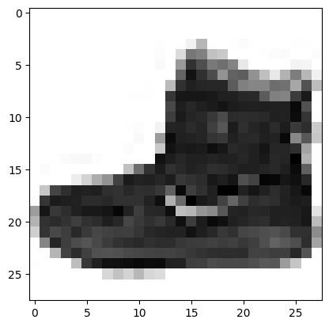
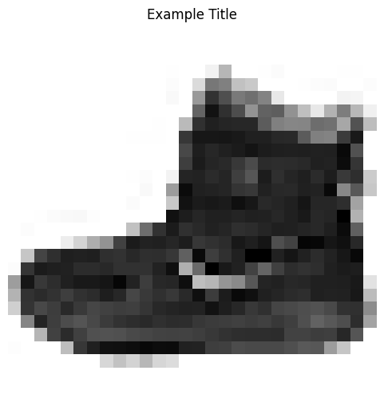
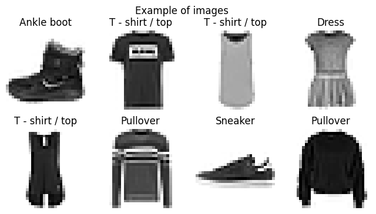
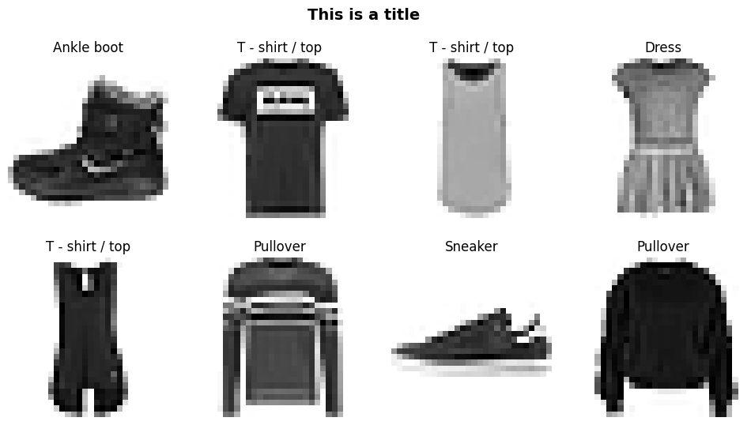
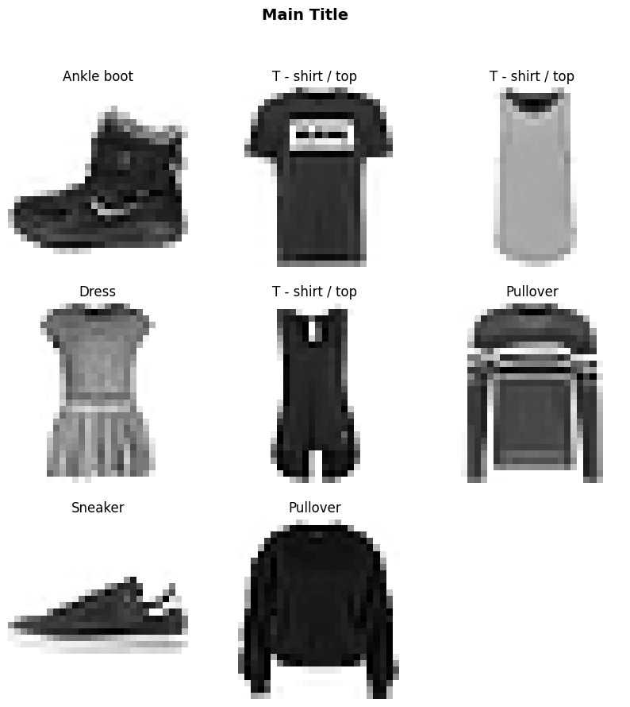

from miniai.datasets import inplace, collate_dictPlotting
torch.manual_seed(1)
mpl.rcParams['image.cmap'] = 'gray_r'Plotting
Single Images
/opt/hostedtoolcache/Python/3.9.17/x64/lib/python3.9/site-packages/fastcore/docscrape.py:225: UserWarning: Unknown section Other Parameters
else: warn(msg)
/opt/hostedtoolcache/Python/3.9.17/x64/lib/python3.9/site-packages/fastcore/docscrape.py:225: UserWarning: Unknown section See Also
else: warn(msg)
/opt/hostedtoolcache/Python/3.9.17/x64/lib/python3.9/site-packages/fastcore/docscrape.py:225: UserWarning: Unknown section Notes
else: warn(msg)show_image
show_image (img, ax=None, title=None, noframe=True, figsize=None, cmap=None, norm=None, aspect=None, interpolation=None, alpha=None, vmin=None, vmax=None, origin=None, extent=None, interpolation_stage=None, filternorm=True, filterrad=4.0, resample=None, url=None, data=None)
| Type | Default | Details | |
|---|---|---|---|
| img | |||
| ax | NoneType | None | |
| title | NoneType | None | |
| noframe | bool | True | |
| figsize | NoneType | None | |
| cmap | NoneType | None | The Colormap instance or registered colormap name used to map scalar data to colors. This parameter is ignored if X is RGB(A). |
| norm | NoneType | None | The normalization method used to scale scalar data to the [0, 1] range before mapping to colors using cmap. By default, a linear scaling is used, mapping the lowest value to 0 and the highest to 1. If given, this can be one of the following: - An instance of .Normalize or one of its subclasses(see :doc: /tutorials/colors/colormapnorms).- A scale name, i.e. one of “linear”, “log”, “symlog”, “logit”, etc. For a list of available scales, call matplotlib.scale.get_scale_names().In that case, a suitable .Normalize subclass is dynamically generatedand instantiated. This parameter is ignored if X is RGB(A). |
| aspect | NoneType | None | The aspect ratio of the Axes. This parameter is particularly relevant for images since it determines whether data pixels are square. This parameter is a shortcut for explicitly calling .Axes.set_aspect. See there for further details.- ‘equal’: Ensures an aspect ratio of 1. Pixels will be square (unless pixel sizes are explicitly made non-square in data coordinates using extent). - ‘auto’: The Axes is kept fixed and the aspect is adjusted so that the data fit in the Axes. In general, this will result in non-square pixels. |
| interpolation | NoneType | None | The interpolation method used. Supported values are ‘none’, ‘antialiased’, ‘nearest’, ‘bilinear’, ‘bicubic’, ‘spline16’, ‘spline36’, ‘hanning’, ‘hamming’, ‘hermite’, ‘kaiser’, ‘quadric’, ‘catrom’, ‘gaussian’, ‘bessel’, ‘mitchell’, ‘sinc’, ‘lanczos’, ‘blackman’. The data X is resampled to the pixel size of the image on the figure canvas, using the interpolation method to either up- or downsample the data. If interpolation is ‘none’, then for the ps, pdf, and svg backends no down- or upsampling occurs, and the image data is passed to the backend as a native image. Note that different ps, pdf, and svg viewers may display these raw pixels differently. On other backends, ‘none’ is the same as ‘nearest’. If interpolation is the default ‘antialiased’, then ‘nearest’ interpolation is used if the image is upsampled by more than a factor of three (i.e. the number of display pixels is at least three times the size of the data array). If the upsampling rate is smaller than 3, or the image is downsampled, then ‘hanning’ interpolation is used to act as an anti-aliasing filter, unless the image happens to be upsampled by exactly a factor of two or one. See :doc: /gallery/images_contours_and_fields/interpolation_methodsfor an overview of the supported interpolation methods, and :doc: /gallery/images_contours_and_fields/image_antialiasing fora discussion of image antialiasing. Some interpolation methods require an additional radius parameter, which can be set by filterrad. Additionally, the antigrain image resize filter is controlled by the parameter filternorm. |
| alpha | NoneType | None | The alpha blending value, between 0 (transparent) and 1 (opaque). If alpha is an array, the alpha blending values are applied pixel by pixel, and alpha must have the same shape as X. |
| vmin | NoneType | None | |
| vmax | NoneType | None | |
| origin | NoneType | None | Place the [0, 0] index of the array in the upper left or lower left corner of the Axes. The convention (the default) ‘upper’ is typically used for matrices and images. Note that the vertical axis points upward for ‘lower’ but downward for ‘upper’. See the :doc: /tutorials/intermediate/imshow_extent tutorial forexamples and a more detailed description. |
| extent | NoneType | None | The bounding box in data coordinates that the image will fill. These values may be unitful and match the units of the Axes. The image is stretched individually along x and y to fill the box. The default extent is determined by the following conditions. Pixels have unit size in data coordinates. Their centers are on integer coordinates, and their center coordinates range from 0 to columns-1 horizontally and from 0 to rows-1 vertically. Note that the direction of the vertical axis and thus the default values for top and bottom depend on origin: - For origin == 'upper' the default is(-0.5, numcols-0.5, numrows-0.5, -0.5).- For origin == 'lower' the default is(-0.5, numcols-0.5, -0.5, numrows-0.5).See the :doc: /tutorials/intermediate/imshow_extent tutorial forexamples and a more detailed description. |
| interpolation_stage | NoneType | None | If ‘data’, interpolation is carried out on the data provided by the user. If ‘rgba’, the interpolation is carried out after the colormapping has been applied (visual interpolation). |
| filternorm | bool | True | A parameter for the antigrain image resize filter (see the antigrain documentation). If filternorm is set, the filter normalizes integer values and corrects the rounding errors. It doesn’t do anything with the source floating point values, it corrects only integers according to the rule of 1.0 which means that any sum of pixel weights must be equal to 1.0. So, the filter function must produce a graph of the proper shape. |
| filterrad | float | 4.0 | The filter radius for filters that have a radius parameter, i.e. when interpolation is one of: ‘sinc’, ‘lanczos’ or ‘blackman’. |
| resample | NoneType | None | When True, use a full resampling method. When False, only resample when the output image is larger than the input image. |
| url | NoneType | None | Set the url of the created .AxesImage. See .Artist.set_url. |
| data | NoneType | None |
Note that the fastcore library gives a list of all of the parameters that can be passed as kwargs, for example interpolation.|
help(show_image)Help on function show_image in module __main__:
show_image(img, ax=None, title=None, noframe=True, figsize=None, *, cmap=None, norm=None, aspect=None, interpolation=None, alpha=None, vmin=None, vmax=None, origin=None, extent=None, interpolation_stage=None, filternorm=True, filterrad=4.0, resample=None, url=None, data=None)
#|export
Load the Fashion Mnist dataset to provide some example images
ds_loader = load_dataset("fashion_mnist")
train_ds, test_ds = ds_loader['train'], ds_loader['test']Found cached dataset fashion_mnist (/Users/johnrichmond/.cache/huggingface/datasets/fashion_mnist/fashion_mnist/1.0.0/0a671f063342996f19779d38c0ab4abef9c64f757b35af8134b331c294d7ba48)
100%|████████████████████████████████████████████| 2/2 [00:00<00:00, 333.66it/s]train_ds.features{'image': Image(decode=True, id=None),
'label': ClassLabel(names=['T - shirt / top', 'Trouser', 'Pullover', 'Dress', 'Coat', 'Sandal', 'Shirt', 'Sneaker', 'Bag', 'Ankle boot'], id=None)}labels = train_ds.features['label']
labels.int2str(0)'T - shirt / top'train_ds[0]{'image': <PIL.PngImagePlugin.PngImageFile image mode=L size=28x28>,
'label': 9}@inplace
def transformi(b, key:str='image'): b[key] = [TF.to_tensor(o) for o in b[key]]tsds = train_ds.with_transform(transformi)train_ds[0]{'image': <PIL.PngImagePlugin.PngImageFile image mode=L size=28x28>,
'label': 9}dl=DataLoader(tsds, collate_fn=collate_dict(tsds), batch_size=16)xb, yb = next(iter(dl))xb.shape, yb.shape(torch.Size([16, 1, 28, 28]), torch.Size([16]))To plot the image using matplotlib imshow requires the image to be indexed down to just the last two dimensions and doesn’t take care of removing the axes without additional commands
img = xb[0][0]
plt.imshow(img)<matplotlib.image.AxesImage>
Using show_image this is much simpler
show_image(xb[0], figsize=(6,6), title="Example Title");
From single images with show_image showing multiple images
It is often necessary to plot multiple images in a grid. To do so effectively it is necessary to size the imaged appropriated and to only show images where one exists (ie empty spots on the grid should reamin empty. ALso we need to make sure we can add labels to each image
subplots
subplots (nrows:int=1, ncols:int=1, figsize:tuple=None, imsize:float=3, suptitle:str=None, sharex=False, sharey=False, squeeze=True, width_ratios=None, height_ratios=None, subplot_kw=None, gridspec_kw=None, **kwargs)
create grid of axes ready for assignment of images to each axis Args: nrows (int): number of rows ncols (int): number of columns figsize (Tuple[float, float]): Size of overall figure that will be produced in default units imsize (float): size of individual images in default units suptitle (Union[str, None]): title for the overall figure
Returns: fig: plt.Figure ax: np.array(plt.Axes)
| Type | Default | Details | |
|---|---|---|---|
| nrows | int | 1 | Number of rows |
| ncols | int | 1 | Number of columns |
| figsize | tuple | None | Size of overall figure that will be produced in default units |
| imsize | float | 3 | size of individual images in default units |
| suptitle | str | None | Title for the plot |
| sharex | bool | False | |
| sharey | bool | False | |
| squeeze | bool | True | |
| width_ratios | NoneType | None | |
| height_ratios | NoneType | None | |
| subplot_kw | NoneType | None | |
| gridspec_kw | NoneType | None | |
| kwargs | |||
| Returns | (plt.Figure, plt.Axes) |
The above function can then be used with multiple images as follows:
lbls = [labels.int2str(int(y)) for y in yb[:8]]fig, axs = subplots(nrows=2, ncols=4, imsize=2, suptitle="Example of images")
imgs = xb[:8]
lbls = [labels.int2str(int(y)) for y in yb[:8]]
for ax, img, lbl in zip(axs.flat, imgs, lbls): show_image(img, ax, title=lbl)
The function more intelligent by automatically calculating the size of the images and allowing the title to have weight and size defined. This function can be built on top of the subplots method above
get_grid
get_grid (n:int, nrows:int=None, ncols:int=None, weight:str='bold', size:int=14, figsize:tuple=None, imsize:float=3, suptitle:str=None, sharex=False, sharey=False, squeeze=True, width_ratios=None, height_ratios=None, subplot_kw=None, gridspec_kw=None)
| Type | Default | Details | |
|---|---|---|---|
| n | int | Number of axes | |
| nrows | int | None | Number of rows |
| ncols | int | None | Number of columns |
| weight | str | bold | Weight to apply to the title |
| size | int | 14 | size of the title font |
| figsize | tuple | None | Size of overall figure that will be produced in default units |
| imsize | float | 3 | size of individual images in default units |
| suptitle | str | None | Title for the plot |
| sharex | bool | False | |
| sharey | bool | False | |
| squeeze | bool | True | |
| width_ratios | NoneType | None | |
| height_ratios | NoneType | None | |
| subplot_kw | NoneType | None | |
| gridspec_kw | NoneType | None |
fig, axs = get_grid(8, nrows=2, suptitle="This is a title")
for ax, img, lbl in zip(axs.flat, imgs, lbls): show_image(img, ax, title=lbl)
Finally it is possible to now create a show_images function that uses show image to display individual images and get_grid to provide the grid of axes upon which to plot them. We will also pass in the labels for each object so that this can be used as a title for each image
show_images
show_images (imgs:list, nrows:int=1, ncols:int=None, titles:List[str]=None, figsize:tuple=None, imsize:float=3, suptitle:str=None, sharex=False, sharey=False, squeeze=True, width_ratios=None, height_ratios=None, subplot_kw=None, gridspec_kw=None)
| Type | Default | Details | |
|---|---|---|---|
| imgs | list | List of images to show | |
| nrows | int | 1 | Number of rows |
| ncols | int | None | Number of columns |
| titles | List[str] | None | list of individual sub-plot headings |
| figsize | tuple | None | Size of overall figure that will be produced in default units |
| imsize | float | 3 | size of individual images in default units |
| suptitle | str | None | Title for the plot |
| sharex | bool | False | |
| sharey | bool | False | |
| squeeze | bool | True | |
| width_ratios | NoneType | None | |
| height_ratios | NoneType | None | |
| subplot_kw | NoneType | None | |
| gridspec_kw | NoneType | None |
help(show_images)Help on function show_images in module __main__:
show_images(imgs: 'list', nrows: 'int' = 1, ncols: 'int' = None, titles: 'List[str]' = None, *, figsize: 'tuple' = None, imsize: 'float' = 3, suptitle: 'str' = None, sharex=False, sharey=False, squeeze=True, width_ratios=None, height_ratios=None, subplot_kw=None, gridspec_kw=None)
#|export
show_images(imgs, suptitle="Main Title", titles=lbls, imsize=2.0, nrows=3, ncols=3, cmap="gray_r",
figsize=(10,10))